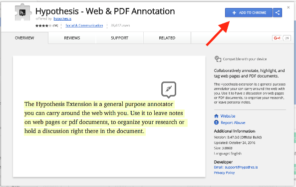
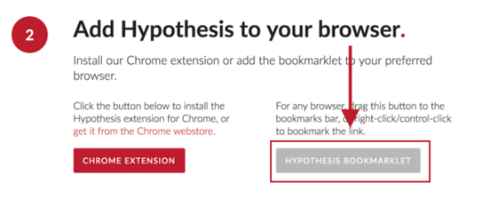
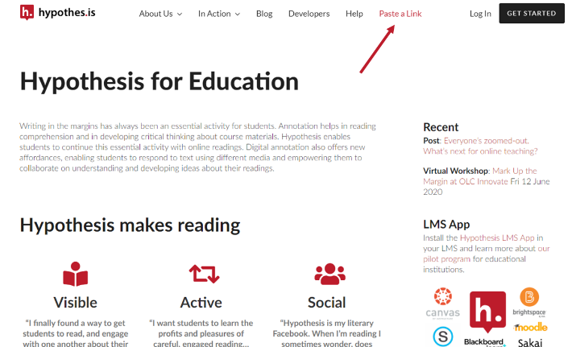

2 Ajouter Hypothesis à votre navigateur
Vous pouvez installer notre extension Chrome ou ajouter le marque-page à votre navigateur préféré. Vous avez trois possibilités :
Vous utilisez Chrome, installez l’extension
Vous utilisez un autre navigateur, installez le signet
Ni l’un ni l’autre ne marche, coller le lien sur via.hypothesis
2.1 Installer l’extension Chrome
Lorsque vous utilisez Google Chrome, suivez ce lien vers l’extension Hypothesis dans la boutique en ligne de Chrome. Cliquez sur “AJOUTER A CHROME” :

2.2 Installer le signet

Pour ceux qui utilisent Firefox, Safari et d’autres navigateurs, le signet fournit un moyen facile d’utiliser Hypothesis dans le navigateur de votre choix. (Note : Si votre navigateur préféré est Chrome, veuillez consulter ces instructions pour installer l’extension Chrome).
Pour installer le signet Hypothesis, ouvrez le navigateur de votre choix et allez sur web.hypothes.is/start/.
Sur le côté droit, vous verrez un bouton “Hypothesis Bookmarklet”. Glissez et déposez le bouton dans votre barre de signets, ou cliquez sur le bouton droit et sélectionnez “bookmark this link” dans le menu contextuel.
2.3 Coller un lien sur via.hypothesis
Copier le lien de la page à annoter
Cliquez sur le lien https://via.hypothes.is/
Coller votre lien et cliquez sur go. Vous retrouverez ce lien sur n’importe que page du site hypothesis en cliquant en haut à droite sur Paste a link.
